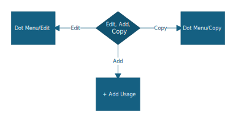
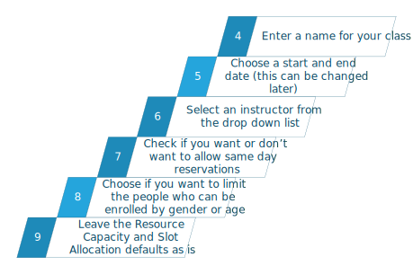

Adding a Class
CaseWorthy manages classes through different terms than we are used to. Understanding the terminology will help you to navigate the menus better.
- First, in order to create a class, you must have a resource available. Think of a resource as a room.
- Then that resource will have a usage. The usage is the time spent with the resource - otherwise known as your class or a series of classes.
- Once this is set up, you can then reserve slots (seats) in the class and track attendance.
Keep in mind, a usage can be for a single day (one class or event) or can recur (a series of classes).
Because we are not using CaseWorthy to book rooms, I have created the resources for everyone. Each program has it's own resource that the person responsible for the classes can manage. If you need a new resource or want to delete a resource, contact the Data Team.
With that all in mind, let's get started.
To see the available resources, you need to go to the Administration tab and click Resources on the left hand side.
On the dashboard (main screen), you should see a list of all resources that are available for your site. If you don't see a list, need to see resources at another site, or want to add more resources - contact the Data Team. Find the resouce that you want to alter and on the Dot Menu, select Classroom.
At this point you have a few choices.
- Edit a current usage. This is good if you want to change the end date of a class series and is located on the Dot Menu.
- Copy a current usage. This is very helpful if you run the same event or series numerous times a year and is located on the Dot Menu.
- Add a usage. This starts from a blank form and can be found at the top of the screen.

Once you have made your choice, you will enter the new usage screen. This is where you are going to setup all of the information for your usage. When it comes to naming your usage, think about if you have a recurring class series or event and how you want to differentiate each one. For instance, if you run a series of classes twice a year, you may want to call one "Class Spring 2025" and the other "Class Fall 2025".

Now you will decide if you want to have the system send out an email to the client to confirm their reservation in the class and if you want a reminder email sent to the client. These options will only work if the client has an email address in our system. If you need to add an email address, you can do so from the Case Management Tab, Case Management, Client Demographics, Contact Information. If you choose to have the system mail out a remind, you will be asked to choose a number of days before the usage. For instance, if you enter "1", the system will email the client the day before the class.
In the next section you are faced with Enrollment Type selection. The default is "No Action Required". This means that anyone can reserve a slot in the usage, regardless of their enrollment in specific programs. You can also select "Required/Auto Enrollment". This is the option to use IF enrollment in a specific program is required to attend the class. If you select this option, a few boxes will appear.
- Automatic Enrollment - If this box is checked, when a client reservation is made and that client is not in the correct program, the system will automatically enroll them.
- Enrollment Required - If this box is checked, a reservation cannot be made for any clients not currently enrolled in the correct program.
- Enroll in Program - This drop down list features all CCAOH programs and is where you set the program requirement.
Lastly, you are going to choose a service that is related to your program and set up the schedule. This is where you can select if the usage is a single day or if it will recur.
Once you are happy with everything, you can save your usage. Now it is all set up to take reservations and attendance.